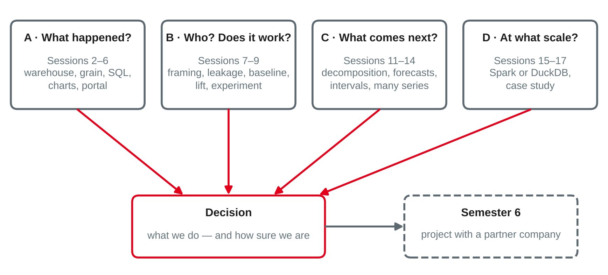

Data Analytics
Group case study presentations · peer feedback · the course in review · outlook to the semester-6 project
DHBW Mannheim · Data Science and Artificial Intelligence · Semester 5
Your preparation: a notebook that runs top to bottom on a fresh kernel, the workshop feedback worked in, one rehearsal with a timer — and a fallback for the demo.
End-to-end analytics on public data
| Slot | Team | Case study | Feedback first from |
|---|---|---|---|
| 1 | Team 1 | [title of the case study] | Team 2 |
| 2 | Team 2 | [title of the case study] | Team 3 |
| 3 | Team 3 | [title of the case study] | Team 4 |
| 4 | Team 4 | [title of the case study] | Team 1 |
| (5) | (Team 5) | [title of the case study] | (Team 1) |
Action titles: if the audience reads only your slide titles, do they get the story?
Own compilation based on Knaflic (2015), Chapman et al. (2000) and Provost and Fawcett (2013).
For each talk, note one point per row — specific, with a slide or a number.
| Criterion | Works well | Next step |
|---|---|---|
| Big idea and decision clear from the start | ||
| Data and its limits | ||
| Method fits the question; baseline | ||
| Evaluation and uncertainty | ||
| Tool choice or dashboard justified | ||
| Story: action titles, honest charts |
One question you would ask the team: ______
Based on Hattie and Timperley (2007) and Knaflic (2015).
Four parts, one thread

Own illustration based on Kimball and Ross (2013), Chapman et al. (2000), Kohavi et al. (2020), Hyndman and Athanasopoulos (2021) and Zaharia et al. (2016).
| Session | Core idea | Typical mistake |
|---|---|---|
| 11 Temporal data | Order, granularity, calendar; decompose before modelling | Summing a rate; ignoring time zones and incomplete periods |
| 12 Forecasting I | Baselines and time series cross-validation over many origins | Shuffled folds; judging one lucky split |
| 13 Forecasting II | Features known at the origin; intervals checked by coverage | Lags shorter than the horizon; observed weather in an "ex ante" test |
| 14 Forecasting at scale | Global models, coherent hierarchies, guards and monitoring | Hand-tuning hundreds of series; MAE that rewards forecasting zero |
| 15 Spark | Partitions, lazy plans, Parquet; smallest tool that works | Spark for data that fits on one machine — without measuring |
Own summary of sessions 11–15, based on Hyndman and Athanasopoulos (2021) and Zaharia et al. (2016).
These five questions are also the best checklist for your semester-6 project — and for any analysis you will be asked to trust.
Own synthesis based on Chapman et al. (2000), Kimball and Ross (2013), Kohavi et al. (2020) and Hyndman and Athanasopoulos (2021).
A city's bike-sharing operator has trip data for five years (60 million trips) and wants to put the right number of bikes at each station every morning. In pairs:
Project Data Engineering and Analytics
| Milestone | What happens | Result |
|---|---|---|
| Kickoff | Charter, scope and goals; roles and sub-teams; working agreements; toolchain | Project charter, sprint plan |
| Data engineering sprints | Requirements, architecture, ingestion, data model, data quality checks | Working data pipeline |
| Mid-term presentation | Status, architecture, first results, risks; feedback from company and lecturer | Course correction |
| Analytics and integration sprints | Analyses and models, evaluation, dashboard or data product, tests | Data product, documentation |
| Final presentation | Demo for the partner company; each student explains their contribution | Code, documentation, reflection |
Based on the module description Project Data Engineering and Analytics (W4DSKI_404), DHBW, Data Science and Artificial Intelligence.
| Project phase | From Data Analytics |
|---|---|
| Understanding the problem | Framing: decision, unit, target, success metric (S7); KPI definitions (S5–6) |
| Data engineering | Grain, conformed dimensions, history and validity periods (S2–3, S11); data quality checks |
| Analytics | Baselines, time-aware validation, forecasts with intervals, experiments (S7–9, S12–14) |
| Data product | Dashboard with defined metrics and access rules (S6); the smallest tool that works (S15) |
| Reviews and presentations | Big idea, action titles, structured feedback (S5, S10, today) |
A sprint review is a working session with stakeholders, not only a show: bring results, open questions and a proposal for what comes next.
Own mapping; sprint review based on Schwaber and Sutherland (2020).
Topic: Presented by the partner company in session 1
Topic: Presented by the partner company in session 1
On a card or in the online form — anonymous:
Your answers change the next run of this course: the session plan is revised after every semester.
Preparation for the kickoff: bring the project brief, a first draft of roles and sub-teams, and the list of open questions for your partner company.